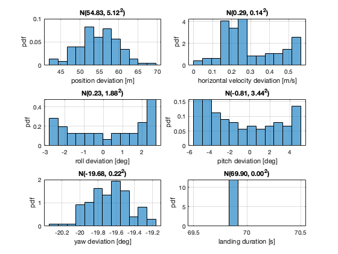

clear; clc; close all; addpath(fileparts(mfilename('fullpath'))); params = initialize_paper_parameters(); nRuns = 100; metrics = struct('positionDeviation', zeros(nRuns,1), ... 'horizontalVelocityDeviation', zeros(nRuns,1), ... 'rollDeviation', zeros(nRuns,1), ... 'pitchDeviation', zeros(nRuns,1), ... 'yawDeviation', zeros(nRuns,1), ... 'touchdownTime', zeros(nRuns,1), ... 'success', false(nRuns,1)); for i = 1:nRuns result = simulate_landing_trial(params, i, false); metrics.positionDeviation(i) = result.metrics.positionDeviation; metrics.horizontalVelocityDeviation(i) = result.metrics.horizontalVelocityDeviation; metrics.rollDeviation(i) = rad2deg(result.metrics.rollDeviation); metrics.pitchDeviation(i) = rad2deg(result.metrics.pitchDeviation); metrics.yawDeviation(i) = rad2deg(result.metrics.yawDeviation); metrics.touchdownTime(i) = result.touchdownTime; metrics.success(i) = result.success; fprintf('Run %3d/%3d: success=%d pos=%.3f m time=%.2f s\n', ... i, nRuns, result.success, result.metrics.positionDeviation, result.touchdownTime); end save(fullfile(params.paths.results, 'monte_carlo_metrics.mat'), 'metrics', 'params'); plot_monte_carlo_statistics(metrics, params);
Run 1/100: success=0 pos=56.561 m time=69.90 s Run 2/100: success=0 pos=57.124 m time=69.90 s Run 3/100: success=0 pos=53.115 m time=69.90 s Run 4/100: success=0 pos=42.753 m time=69.90 s Run 5/100: success=0 pos=54.697 m time=69.90 s Run 6/100: success=0 pos=43.855 m time=69.90 s Run 7/100: success=0 pos=57.910 m time=69.90 s Run 8/100: success=0 pos=52.077 m time=69.90 s Run 9/100: success=0 pos=60.190 m time=69.90 s Run 10/100: success=0 pos=52.220 m time=69.90 s Run 11/100: success=0 pos=57.552 m time=69.90 s Run 12/100: success=0 pos=58.103 m time=69.90 s Run 13/100: success=0 pos=50.486 m time=69.90 s Run 14/100: success=0 pos=52.912 m time=69.90 s Run 15/100: success=0 pos=47.662 m time=69.90 s Run 16/100: success=0 pos=57.271 m time=69.90 s Run 17/100: success=0 pos=55.791 m time=69.90 s Run 18/100: success=0 pos=52.984 m time=69.90 s Run 19/100: success=0 pos=59.091 m time=69.90 s Run 20/100: success=0 pos=50.549 m time=69.90 s Run 21/100: success=0 pos=64.064 m time=69.90 s Run 22/100: success=0 pos=59.552 m time=69.90 s Run 23/100: success=0 pos=53.178 m time=69.90 s Run 24/100: success=0 pos=48.687 m time=69.90 s Run 25/100: success=0 pos=47.151 m time=69.90 s Run 26/100: success=0 pos=57.771 m time=69.90 s Run 27/100: success=0 pos=54.279 m time=69.90 s Run 28/100: success=0 pos=52.063 m time=69.90 s Run 29/100: success=0 pos=47.253 m time=69.90 s Run 30/100: success=0 pos=50.916 m time=69.90 s Run 31/100: success=0 pos=54.597 m time=69.90 s Run 32/100: success=0 pos=52.474 m time=69.90 s Run 33/100: success=0 pos=59.151 m time=69.90 s Run 34/100: success=0 pos=58.365 m time=69.90 s Run 35/100: success=0 pos=55.623 m time=69.90 s Run 36/100: success=0 pos=52.575 m time=69.90 s Run 37/100: success=0 pos=50.889 m time=69.90 s Run 38/100: success=0 pos=56.220 m time=69.90 s Run 39/100: success=0 pos=53.544 m time=69.90 s Run 40/100: success=0 pos=56.719 m time=69.90 s Run 41/100: success=0 pos=59.975 m time=69.90 s Run 42/100: success=0 pos=56.607 m time=69.90 s Run 43/100: success=0 pos=60.201 m time=69.90 s Run 44/100: success=0 pos=50.340 m time=69.90 s Run 45/100: success=0 pos=48.789 m time=69.90 s Run 46/100: success=0 pos=51.127 m time=69.90 s Run 47/100: success=0 pos=62.130 m time=69.90 s Run 48/100: success=0 pos=60.647 m time=69.90 s Run 49/100: success=0 pos=58.262 m time=69.90 s Run 50/100: success=0 pos=54.875 m time=69.90 s Run 51/100: success=0 pos=53.689 m time=69.90 s Run 52/100: success=0 pos=48.368 m time=69.90 s Run 53/100: success=0 pos=47.998 m time=69.90 s Run 54/100: success=0 pos=55.260 m time=69.90 s Run 55/100: success=0 pos=60.598 m time=69.90 s Run 56/100: success=0 pos=51.548 m time=69.90 s Run 57/100: success=0 pos=62.069 m time=69.90 s Run 58/100: success=0 pos=57.471 m time=69.90 s Run 59/100: success=0 pos=46.720 m time=69.90 s Run 60/100: success=0 pos=59.306 m time=69.90 s Run 61/100: success=0 pos=47.288 m time=69.90 s Run 62/100: success=0 pos=61.531 m time=69.90 s Run 63/100: success=0 pos=53.460 m time=69.90 s Run 64/100: success=0 pos=56.440 m time=69.90 s Run 65/100: success=0 pos=62.012 m time=69.90 s Run 66/100: success=0 pos=58.084 m time=69.90 s Run 67/100: success=0 pos=51.935 m time=69.90 s Run 68/100: success=0 pos=58.888 m time=69.90 s Run 69/100: success=0 pos=56.045 m time=69.90 s Run 70/100: success=0 pos=46.041 m time=69.90 s Run 71/100: success=0 pos=60.383 m time=69.90 s Run 72/100: success=0 pos=68.675 m time=69.90 s Run 73/100: success=0 pos=52.207 m time=69.90 s Run 74/100: success=0 pos=57.094 m time=69.90 s Run 75/100: success=0 pos=54.302 m time=69.90 s Run 76/100: success=0 pos=56.625 m time=69.90 s Run 77/100: success=0 pos=51.618 m time=69.90 s Run 78/100: success=0 pos=64.407 m time=69.90 s Run 79/100: success=0 pos=54.037 m time=69.90 s Run 80/100: success=0 pos=53.129 m time=69.90 s Run 81/100: success=0 pos=56.660 m time=69.90 s Run 82/100: success=0 pos=55.319 m time=69.90 s Run 83/100: success=0 pos=57.379 m time=69.90 s Run 84/100: success=0 pos=61.581 m time=69.90 s Run 85/100: success=0 pos=51.139 m time=69.90 s Run 86/100: success=0 pos=65.785 m time=69.90 s Run 87/100: success=0 pos=49.523 m time=69.90 s Run 88/100: success=0 pos=51.665 m time=69.90 s Run 89/100: success=0 pos=54.959 m time=69.90 s Run 90/100: success=0 pos=62.117 m time=69.90 s Run 91/100: success=0 pos=64.625 m time=69.90 s Run 92/100: success=0 pos=44.225 m time=69.90 s Run 93/100: success=0 pos=52.035 m time=69.90 s Run 94/100: success=0 pos=49.562 m time=69.90 s Run 95/100: success=0 pos=58.182 m time=69.90 s Run 96/100: success=0 pos=57.399 m time=69.90 s Run 97/100: success=0 pos=45.960 m time=69.90 s Run 98/100: success=0 pos=51.655 m time=69.90 s Run 99/100: success=0 pos=51.262 m time=69.90 s Run 100/100: success=0 pos=54.230 m time=69.90 s Monte Carlo summary: success rate: 0.0 % position deviation N(54.834, 5.122^2) horizontal velocity N(0.291, 0.144^2) roll deviation N(0.228, 1.884^2) deg pitch deviation N(-0.812, 3.436^2) deg yaw deviation N(-19.677, 0.220^2) deg
